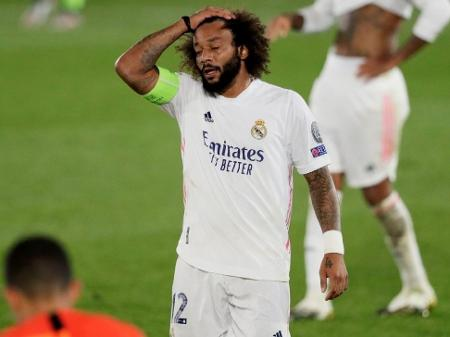
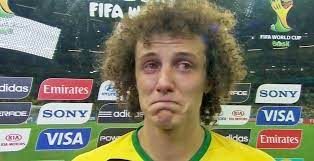

O fracasso na carreira.
Ínicio
Como sabemos tudo na vida tem um prazo de validade, até mesmo a carreira de um atleta. Desgastes, lesões, falta de ritmo e comodismo,tudo isso irá influenciar a longo prazo na vida de um profissional de esportes, portanto, é preciso dedicar-se bastante para que consiga ao maximo desempenhar um bom condicionamento físico e poder desfrutar de longos tempos dentro do gramado.
Algumas coisas que você não pode fazer enquanto for um jogador de futebol
- Ter um alimentação desbalanceada.
- Perder o foco.
- Parar de treinar.
- Ser igual o neymar.
- Ligar para as críticas.
A seguir veja alguns jogadores que hoje se encontram falidos:
Clique nas fotos para descobrir um pouco sobre o que causou o desastre em suas devidas carreiras.
 